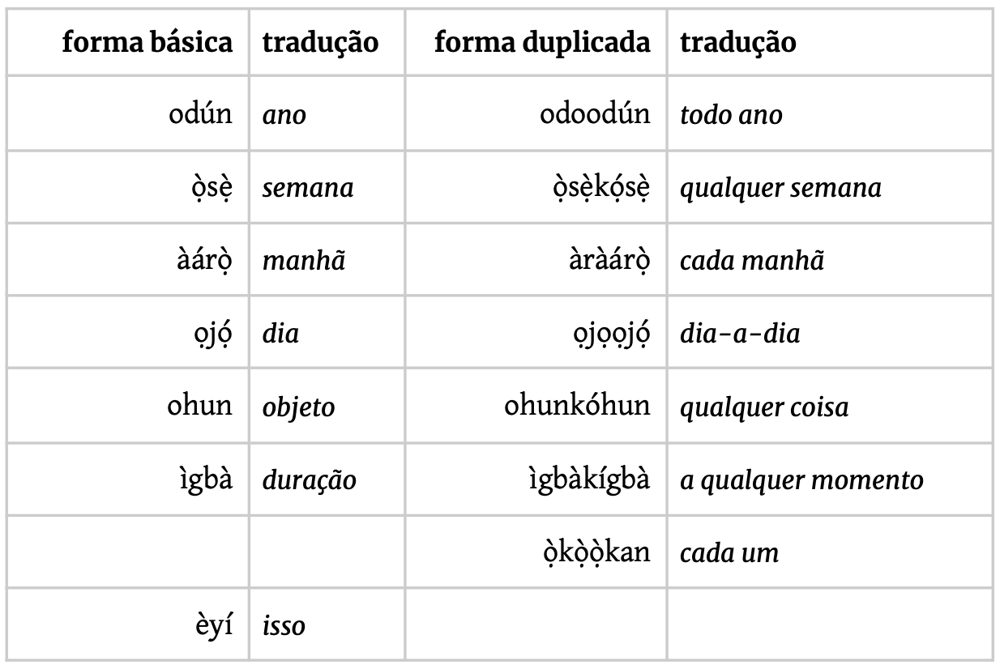

4 O que é ciência? Como pensar cientificamente?
Roteiro de aula elaborado com o apoio de linguagens de programação e ferramentas de inteligência artificial, submetido à revisão, validação e curadoria pedagógica do professor.
Leitura indicada
Afinal, o que é Ciência? (p. 9-12), capítulo do livro Afinal o que é ciência?… e o que não é, de André Demambre Bacchi. Disponível na Minha Biblioteca.
Objetivos da aula
Ao final deste encontro, e com base na leitura indicada, espera-se que você seja capaz de:
- Distinguir explicações baseadas em evidências científicas de afirmações baseadas em senso comum, analisando exemplos de linguagem vaga, promessas absolutas e ausência de dados empíricos.
4.1 Contextualização
Desde os tempos mais remotos, os seres humanos buscam compreender os fenômenos que os cercam, formulando explicações e crenças a partir da experiência cotidiana. No entanto, muitas dessas interpretações são limitadas por visões parciais da realidade, influenciadas por emoções, tradições ou coincidências.
Neste encontro, refletiremos sobre o que distingue a ciência de outros modos de conhecer o mundo e compreenderemos como o pensamento científico, ao se apoiar em métodos rigorosos, ceticismo organizado e revisão constante, oferece uma das formas mais confiáveis de produzir conhecimento e orientar decisões racionais em um mundo marcado pela incerteza.
4.2 Leitura em foco
A palavra “Ciência” tem origem no latim scientia, que significa conhecimento. (Bachi, 2024 - ebook - destaques do autor).
Ciência se refere a um grande empreendimento coletivo da Humanidade, que organiza nossos conhecimentos e predições sobre o Universo. (Bachi, 2024 - ebook - destaques meus).
Esses conhecimentos são obtidos, confrontados e atualizados por meio de um método próprio (…) transparente e apoiado em um ceticismo organizado, que nos ajuda a reduzir as incertezas que temos sobre o mundo que nos cerca. (Bachi, 2024 - ebook - destaques meus).
O pensamento científico se aplica sempre que buscamos tomar decisões baseadas em evidências (e não nos costumes ou na intuição).
4.3 Aprendizagem prática
Reflexão
Como aplicar o pensamento científico?
Estabeleça a correspondência entre cada forma de pensar cientificamente e sua aplicação prática no processo de escolha de uma dieta.
| 🔬 Formas de pensar | 🧩 Aplicações práticas |
|---|---|
| A) Formular hipóteses testáveis | 1) Analisar estudos clínicos publicados em revistas científicas sobre os efeitos de diferentes dietas. |
| B) Buscar evidências confiáveis | 2) Observar se, após um mês seguindo a dieta, houve melhora nos exames e no bem-estar geral. |
| C) Considerar variáveis contextuais | 3) Verificar se a dieta escolhida se adequa à rotina pessoal, às condições de saúde e ao orçamento familiar. |
| D) Evitar generalizações apressadas | 4) Refletir se a dieta que funcionou para um amigo realmente é apropriada para você. |
| E) Consultar profissionais especializados | 5) Levantar a dúvida: “Será que a dieta X reduz mais gordura abdominal do que a dieta Y?” |
| F) Acompanhar resultados e reavaliar | 6) Marcar uma consulta com um nutricionista antes de iniciar qualquer dieta. |
A - 5
B - 1
C - 3
D - 4
E - 6
F - 2
4.4 Aprendizagem prática
Produção de texto
Como exercitar o ceticismo organizado?
Você já se deparou com vídeos ou manchetes que prometem curas milagrosas ou soluções rápidas para problemas complexos? Nesta atividade, vamos exercitar nossa capacidade de pensar cientificamente.
Responda por escrito à seguinte pergunta: A receita apresentada no vídeo pode ser considerada uma recomendação científica? Quais critérios científicos permitem justificar sua resposta? Justifique sua resposta com base nos critérios que diferenciam o senso comum do pensamento científico.
Quais são os elementos não científicos no vídeo?
- Linguagem vaga: expressões como “lá pelos 50 anos”, “tarde demais”, “pele bonita” e “melhorar a saúde” não são mensuráveis.
- Promessas absolutas: afirma que “seus problemas vão acabar” sem qualquer comprovação.
- Apelo à autoridade implícita: o canal se apresenta como confiável, mas não cita fontes nem especialistas.
- Ausência de dados: não há estatísticas, estudos, nem explicações sobre doses ou eficácia real.
- Relações causais forçadas: ingredientes com vitamina C e magnésio são relacionados diretamente à produção de colágeno sem evidência científica.
Quais são as fontes confiáveis citadas?
- O vídeo não menciona estudos, instituições científicas ou profissionais da saúde.
O que seria necessário para testar cientificamente?
- Hipótese clara: “O consumo diário da receita X reduz dor articular em adultos?”
- Experimento controlado: grupos com e sem a receita, de forma aleatória e cega.
- Variáveis controladas: alimentação, idade, saúde prévia, medicamentos.
- Evidências: exames clínicos, questionários validados, análise estatística dos resultados.
4.5 Leitura em foco
[Os] conhecimentos [científicos] são analisados e interpretados de modo contextual à luz do ecossistema científico existente. (Bachi, 2024 - ebook - destaques meus).
Para boa parte de nós, as evidências científicas não são um fator determinante no momento de tomar alguma decisão pessoal. (Bachi, 2024 - ebook - destaques meus).
Coincidências podem acontecer durante o percurso. (…) São coincidências que reforçam uma determinada crença e que, consequentemente, nos afastam da Ciência. (…) É justamente esse tipo de “miopia” que precisamos evitar. (Bachi, 2024 - ebook - destaques meus).
É aí que a Ciência entra como um par de óculos que nos ajudam a ver o mundo com mais clareza. Ao nos fornecer uma maneira sistemática e rigorosa de coletar, analisar e interpretar dados e informações, a Ciência nos permite ver além das limitações da nossa percepção pessoal e obter uma compreensão mais precisa da realidade. (Bachi, 2024 - ebook - destaques meus).
Se até agora o senso comum guiou suas escolhas práticas por meio de tentativa e erro, chegou o momento de mergulharmos na ferramenta mais confiável e essencial para a tomada de decisões racionais: o pensamento científico. (Bachi, 2024 - ebook - destaques meus).
4.6 Aprendizagem prática
Desafio
Vamos estimular nosso pensamento científico?
Desenvolver o pensamento científico e o senso crítico não depende apenas do acesso a informações, mas sobretudo da capacidade de organizar o pensamento, identificar padrões, formular hipóteses, interpretar dados e avaliar explicações possíveis para um problema. Essas são habilidades fundamentais para a produção de conhecimento científico.
Um dos caminhos para exercitar essas competências é o pensamento analítico. Ele consiste na capacidade de observar informações, reconhecer regularidades, testar possibilidades e tirar conclusões a partir de evidências ou regras identificadas.
Embora o exercício a seguir não seja um problema científico no sentido estrito, ele mobiliza habilidades cognitivas que também estão na base da investigação científica, como atenção, memória, análise, síntese e inferência. Essas habilidades são essenciais tanto para resolver problemas do cotidiano quanto para compreender e produzir argumentos bem fundamentados.
Para exercitá-las, segue um desafio que exigirá de você concentração, raciocínio lógico e uma boa dose de curiosidade. Em duplas, resolvam a questão abaixo.
Àṣẹ! O iorubá é, junto com as línguas bantu de Angola como o kimbundu, uma das principais línguas de herança africana no Brasil e na cultura brasileira. Do acarajé aos orixás, muitas são as nossas heranças iorubá.
Na língua iorubá acontece um fenômeno interessante, presente em diversas línguas ao redor do mundo, que consiste na formação de novas palavras a partir da duplicação de uma palavra ou de parte dela. Seguem abaixo algumas palavras em iorubá e suas versões duplicadas, além das respectivas traduções:

Com isso, quais as traduções, respectivamente, de ‘um’, ‘qualquer’, e ‘semanalmente’?
- ọ̀kan, èyíkèyí, ọ̀sọ̀ọ̀sẹ̀
- ọ̀kọ̀kan, èyèèyí, ọ̀sẹ̀kọ́sẹ̀
- ọ̀kan, èyíkèyí, ọ̀sẹ̀kọ́sẹ̀
- ọ̀kọ̀kan, èyíkéyí, ọ̀sọ̀ọ̀sẹ̀
- ọ̀kan, èyíkéyí, ọ̀sọ̀ọ̀sẹ̀
Nota: Em iorubá, a letra o é pronunciada como o ‘ó’ em ‘pó’; e é como ‘é’ em ‘café’; gb é pronunciado como uma única consoante. O acento grave (`) e o acento agudo (´) representam tom baixo e tom alto, respectivamente.
Resposta: E
O problema apresenta duas formas de reduplicação em iorubá, dentre outras que existem na língua: a forma 1 dá o sentido de “todo, cada” e a forma 2 dá o sentido de “qualquer”:
| Tipo | Forma básica | Tradução | Forma duplicada | Tradução |
|---|---|---|---|---|
| 1 | odún | ano | odoodún | todo ano |
| 1 | àárọ̀ | manhã | àràárọ̀ | cada manhã |
| 1 | ọjọ́ | dia | ojọọjọ́ | dia-a-dia |
| 2 | ọ̀sẹ̀ | semana | ọ̀sẹ̀kọ́sẹ̀ | qualquer semana |
| 2 | ohun | objeto | ohunkóhun | qualquer coisa |
| 2 | ìgbà | duração | ìgbàkígbà | a qualquer momento |
Forma 1
Na forma 1, podemos ver que o fim da forma duplicada é idêntico à palavra em sua forma básica. A mudança acontece no início, onde adicionamos, nesta ordem: a primeira vogal da palavra, a primeira consoante e, novamente, a primeira vogal.
odún: o + d + o + odún = odoodún
àárọ̀: à + r + à + àárọ̀ = àràárọ̀
No segundo exemplo, os dois à se juntam, restando apenas um deles.
Forma 2
Na forma 2, a palavra é duplicada completamente e recebe um k entre as duas repetições. Além disso, a primeira vogal da segunda parte — aquela que aparece logo após o k — recebe o tom alto (´).
ọ̀sẹ̀: ọ̀sẹ̀ + k + ọ́sẹ̀ = ọ̀sẹ̀kọ́sẹ̀
Resumo
| Tipo | Sentido | Processo | Variação tonal |
|---|---|---|---|
| 1 | “todo X” ou “cada X” | V₁ + C₁ + V₁ + X | Nenhuma |
| 2 | “qualquer X” | X + k + X | A primeira vogal da repetição recebe tom alto |
Resolução
A palavra para “um” pode ser derivada de ọ̀kọ̀ọ̀kan (“cada um”). Como se trata de uma palavra do tipo 1, podemos deduzir que a palavra básica é ọ̀kan. A partir dos dados do problema, seria possível supor que a forma básica fosse ọ̀ọ̀kan, mas ela não aparece nas alternativas.
A palavra para “qualquer” deve ser formada pela reduplicação do tipo 2 de èyí (“isso”). Para isso, duplicamos a palavra, inserimos um k entre as duas partes e atribuímos tom alto à vogal que aparece logo após o k:
èyí + k + éyí = èyíkéyí
A palavra para “semanalmente”, que significa “a cada semana”, é formada pela reduplicação do tipo 1 de ọ̀sẹ̀ (“semana”):
ọ̀ + ṣ + ọ̀ + ọ̀sẹ̀ = ọ̀ṣọ̀ọ̀sẹ̀
Portanto, a resposta correta é a letra E.
Para a próxima aula:
Leia o texto Pensamento crítico (p. 3-9), capítulo do livro Pensamento crítico: o poder da lógica e da argumentação, de Walter Carnielli e Richard Epstein. Disponível na Biblioteca Virtual.
…e também Observe, test, reflect: A better life with the scientific method, artigo de Santiago Gisler publicado pela Ivory Embassy. Disponível em: https://ivoryembassy.com/the-scientific-method/.